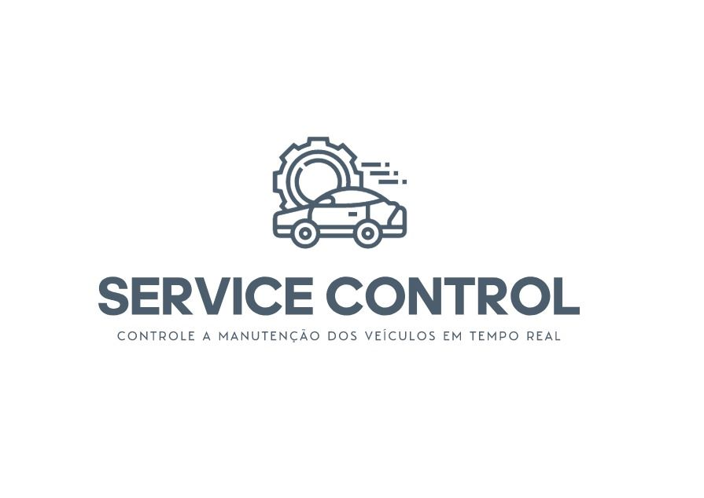
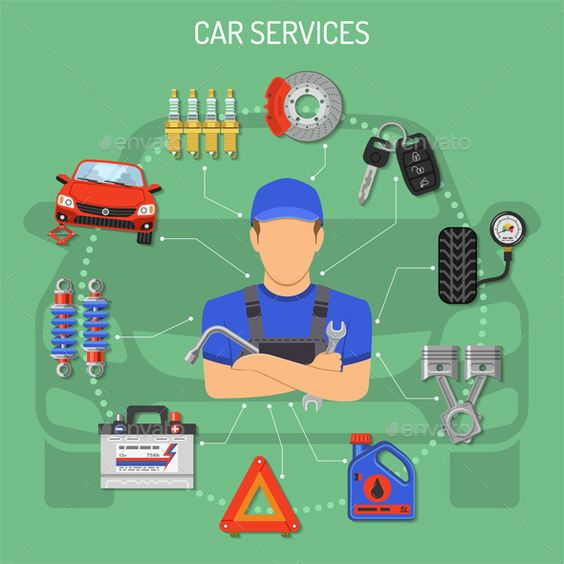
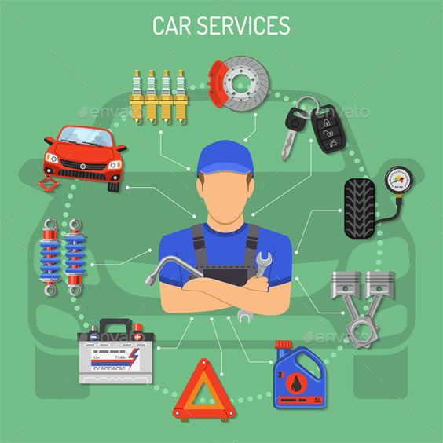

SERVICE CONTROL:
O MODO DE OTIMIZAR E FACILITAR A MANUTENÇÃO DO SEU VEÍCULO

APLICATIVO OTIMIZADO:
1- Agendamento de serviços de manutenção e reparação de veículos.
2- Acompanhamento em tempo real do status da manutenção do veículo.
3- Notificações e lembretes automáticos sobre prazos de entrega e serviços concluídos.
4- Histórico de manutenção e registros de serviços realizados no veículo.
5- Orçamentos online e estimativas de custos para os serviços solicitados.
6- Integração com sistemas de pagamento para facilitar transações financeiras.
7- Recomendações personalizadas com base no histórico de manutenção do veículo.
8- Chat em tempo real com especialistas para esclarecer dúvidas dos clientes.
9- Programa de fidelidade e recompensas para clientes frequentes.
10- Avaliações e comentários dos clientes sobre os serviços prestados.
 

PROBLEMA:
1- Atrasos na entrega e no cumprimento dos prazos acordados com os clientes.
2- Perda de confiança dos clientes na oficina e possível migração para a concorrência.
3- Prejuízo financeiro devido à necessidade de retrabalho ou reparos adicionais causados pelo esquecimento.
4- Desorganização na gestão dos veículos em manutenção, dificultando o controle e acompanhamento adequados.
5- Sobrecarga de trabalho nos colaboradores da oficina, uma vez que os veículos esquecidos podem ocupar espaço e recursos desnecessários.
6- Possibilidade de danos e deterioração dos veículos devido à falta de cuidado e acompanhamento.
7- Aumento das reclamações e insatisfação dos clientes, afetando a reputação da oficina.
8- Perda de oportunidades de venda de serviços adicionais durante a manutenção dos veículos.
9- Falhas no controle de estoque de peças e componentes, dificultando a conclusão das manutenções.
10- Riscos legais e responsabilização da oficina em casos de danos, roubos ou extravios de veículos esquecidos.
NICHO DE MERCADO:
1- Excelência no atendimento ao cliente.
2- Transparência e honestidade.
3- Qualidade e competência técnica.
4- Serviços personalizados.
5- Valor agregado.
PROPOSTA DE VALOR:
-Na nossa oficina mecânica, buscamos oferecer aos nossos clientes uma experiência de qualidade e valor agregado. Entendemos que investir em manutenção e reparação automotiva pode ser uma preocupação financeira, mas estamos comprometidos em fornecer serviços confiáveis e duradouros.
-Nossa proposta de valor é proporcionar tranquilidade aos clientes, oferecendo serviços de alta qualidade que garantem a segurança e o bom funcionamento de seus veículos. Para isso, contamos com uma equipe técnica altamente qualificada e utilizamos peças e componentes de confiança.
-Compreendemos que os custos de manutenção podem variar dependendo do serviço necessário. Por isso, estamos empenhados em fornecer orçamentos transparentes e detalhados, para que os clientes possam tomar decisões informadas. Além disso, oferecemos opções de pagamento flexíveis, como parcelamento e descontos para clientes regulares, visando tornar nossos serviços acessíveis e convenientes.
-Acreditamos que o investimento em serviços de qualidade resulta em economia a longo prazo, evitando reparos futuros e prolongando a vida útil dos veículos. Priorizamos a satisfação do cliente, trabalhando com eficiência, transparência e atendimento personalizado.
-Nossa proposta de valores se baseia na confiança, na transparência e na busca constante pela excelência. Estamos comprometidos em entregar serviços superiores e estabelecer uma relação duradoura com nossos clientes, oferecendo soluções confiáveis e facilitando o pagamento para que eles tenham a segurança e a tranquilidade de contar com uma oficina mecânica confiável.
Agradecemos pela Preferência :)